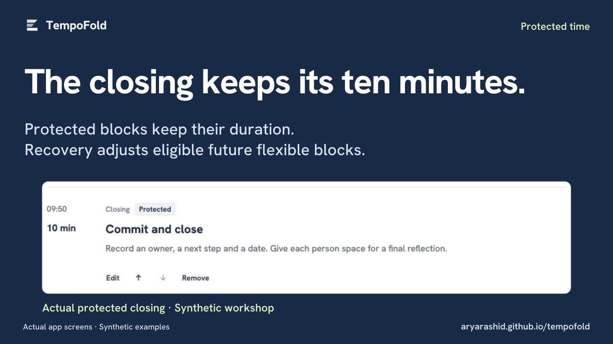
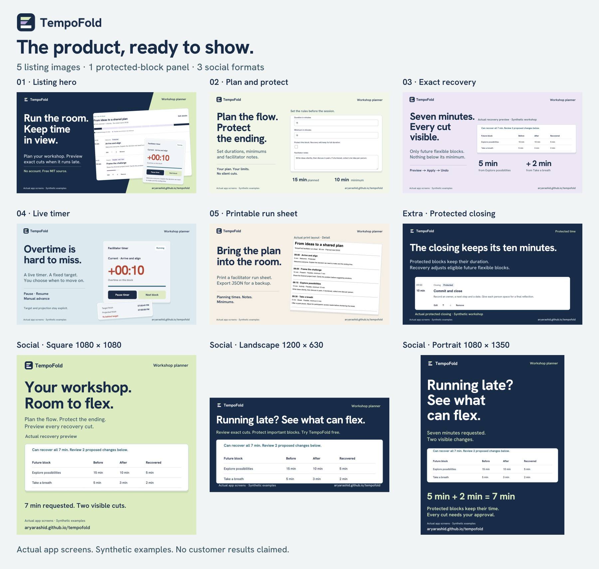

The product, ready to show.
Five listing images, a protected-block panel, and square, landscape and portrait graphics. Every composition uses actual TempoFold screens with synthetic examples. Open any image for its full-resolution JPEG.


Four feature panels for the listing


The five primary files are exactly 1600 × 900 and below 5 MB each. They fit the stated Z2H image specifications. Preparing these files does not mean they have been uploaded to a marketplace.
An extra panel for protected time



Social formats


Contact sheet: all nine finished images

Source and accurate copy
The kit includes the actual screen captures, portable SVG compositions, editable generator source, JPEG exports, suggested captions and licenses. The app itself still has zero npm runtime dependencies.
Original software and artwork by Arya Rashid, built with AI assistance. Hanken Grotesk lettering retains SIL OFL 1.1. No customer results or performance benchmarks are claimed.